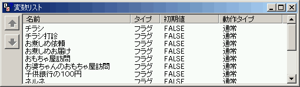

変数リストで設定した変数は、チャートや計算ノードの変数とは違い、全てのチャート、ノードから読み書きが行えます。
変数の型を指定します。
FALSE、TRUEのみ扱える条件に適合している・ON状態がTRUE、条件に適合していない・OFF状態がFALSE値を逆転させる場合は「f = Not(f)」または「f = f ^ TRUE」とします
ゲーム起動時またはリセット時に初期化されますリセット時とは以下のような時です・プレイヤーがシステムメニューを使ってタイトル画面に戻った時・「シーン回想」モードで話を始めた時・ゲームが終了してタイトル画面に戻った時
起動時のみ初期化